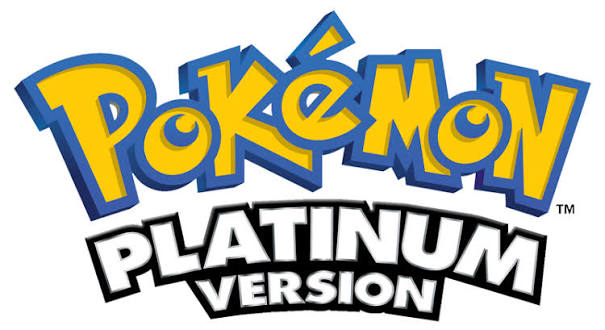

PokeBasics
PokeBasics
PokeBasics
PokeBasics
MIDDLE ERA

The Platinum Era expanded Generation IV Pokémon with powerful cards and new gameplay mechanics.
Explore some of the notable sets associated with this era.

Release : February 2009
The original Pokémon TCG expansion.

Release : May 2009
The second major Pokémon TCG expansion.

Release : August 2009
A classic set featuring Pokémon fossils
and other original Pokémon.
Some of the most recognisable cards from this period.

Rising Rivals

Supreme Victors

Supreme Victors